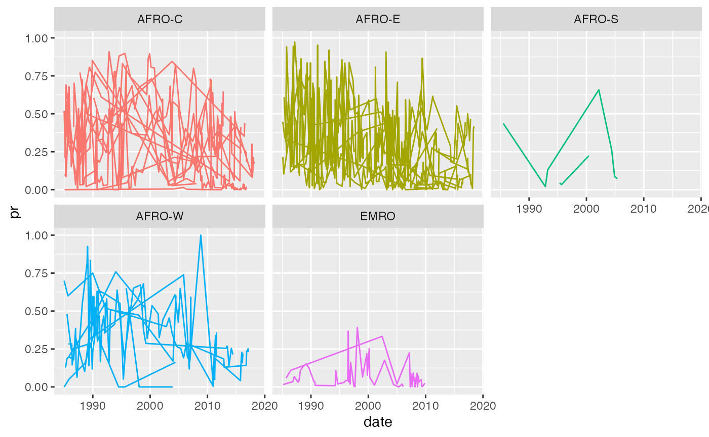

library(yahtsee)
#> Loading required package: tsibble
#>
#> Attaching package: 'tsibble'
#> The following objects are masked from 'package:base':
#>
#> intersect, setdiff, union
library(ggplot2)
library(dplyr)
#>
#> Attaching package: 'dplyr'
#> The following objects are masked from 'package:stats':
#>
#> filter, lag
#> The following objects are masked from 'package:base':
#>
#> intersect, setdiff, setequal, unionFor this model we are going to fit a very simple model using some summarised data from the malariaAtlas R package, malaria_africa_ts:
malaria_africa_ts
#> # A tsibble: 1,046 x 15 [1D]
#> # Key: country [46]
#> who_region who_subregion country date month_num positive examined
#> <fct> <fct> <fct> <date> <dbl> <dbl> <int>
#> 1 AFRO AFRO-W Angola 1989-06-01 120 15.8 50
#> 2 AFRO AFRO-W Angola 2005-11-01 372 82 111
#> 3 AFRO AFRO-W Angola 2006-04-01 300 102 197
#> 4 AFRO AFRO-W Angola 2006-11-01 384 41 347
#> 5 AFRO AFRO-W Angola 2006-12-01 396 173 734
#> 6 AFRO AFRO-W Angola 2007-01-01 276 216 828
#> 7 AFRO AFRO-W Angola 2007-02-01 288 42 71
#> 8 AFRO AFRO-W Angola 2007-03-01 300 119 448
#> 9 AFRO AFRO-W Angola 2011-01-01 324 1 239
#> 10 AFRO AFRO-W Angola 2011-02-01 336 148 1132
#> # … with 1,036 more rows, and 8 more variables: pr <dbl>, avg_lower_age <dbl>,
#> # continent_id <fct>, country_id <fct>, year <int>, month <int>,
#> # avg_upper_age <dbl>, species <fct>This data has the following features we are interested in:
(Note that we are still getting some more covariates for this data.)
tsibble data
This data is a tsibble (the “ts” is pronounced like the end of “bats”).
This is a speical time series aware table, that knows what elements identify the individual time components, in this case, country, and what the time index is, in this case, date.
We use a tsibble because it stores this time (referred to as an “index”) and group (referred to as a “key”) information, which we can use inside our modelling software.
Let’s say we want to model the pr over time. Here is a plot of the pr over time, where each line is a country, and facets represent the different who subregions:
ggplot(malaria_africa_ts,
aes(x = date,
y = pr,
group = country,
colour = who_subregion)) +
geom_line() +
facet_wrap(~who_subregion) +
theme(legend.position = "none")
Let’s create a simple model that has fixed effect of lower age. We add a AR1 process for each of these subregions using the hts() component in the formula. Here, the inputs arethe levels of hierarchy, in order of decreasing size:
pr ~ avg_lower_age + hts(who_region, who_subregion, country)We then provide the data, likelihood family (in this case “gaussian”, but all INLA likelihoods are available).
We specify the time component at the moment using the special_index argument, but this will be removed later once we resolve a couple of bugs to do with the data.
m <- fit_hts(
# inputs are the levels of hierarchy, in order of decreasing size
formula = pr ~ avg_lower_age + hts(who_region, who_subregion, country),
.data = malaria_africa_ts,
family = "gaussian",
special_index = month_num
)The equivalent model fitted with inlabru would look like the following:
inlabru::bru(
formula = pr ~ avg_lower_age + Intercept +
who_region(month_num,
model = "ar1",
group = .who_region_id,
constr = FALSE) +
who_subregion(month_num,
model = "ar1",
group = .who_subregion_id,
constr = FALSE) +
country(month_num,
model = "ar1",
group = .country_id,
constr = FALSE),
family = "gaussian",
data = malaria_africa_ts,
options = list(
control.compute = list(config = TRUE),
control.predictor = list(compute = TRUE, link = 1)
)
)Here are some of the extra considerations that need to be made:
group argument requires a special index variable of a group to be made (.who_subregion_id)inlabru in options to help get the appropriate data back.The proposed workflow of this type of model is as follows:
tsibble object:
library(tsibble)
malaria_africa_ts <- as_tsibble(x = malaria_africa,
key = country,
index = date)
model_hts <- fit_hts(
# inputs are the levels of hierarchy, in order of decreasing size
formula = pr ~ avg_lower_age + hts(who_region, who_subregion, country),
.data = malaria_africa_ts,
family = "gaussian"
)
diagnostics(model_hts)
autoplot(model_hts)
date_range <- clock::date_build(2019, 2, 1:5)
date_range
#> [1] "2019-02-01" "2019-02-02" "2019-02-03" "2019-02-04" "2019-02-05"
countries <- c("Ethiopia", "Tanzania")
countries
#> [1] "Ethiopia" "Tanzania"
df_pred <- prediction_data(
model_data = malaria_africa_ts,
key = countries,
index = date_range
)
df_pred
#> # A tsibble: 10 x 2 [1D]
#> # Key: country [2]
#> country date
#> <chr> <date>
#> 1 Ethiopia 2019-02-01
#> 2 Ethiopia 2019-02-02
#> 3 Ethiopia 2019-02-03
#> 4 Ethiopia 2019-02-04
#> 5 Ethiopia 2019-02-05
#> 6 Tanzania 2019-02-01
#> 7 Tanzania 2019-02-02
#> 8 Tanzania 2019-02-03
#> 9 Tanzania 2019-02-04
#> 10 Tanzania 2019-02-05
# post-hoc prediction function - with options for presenting the uncertainty
pred <- predict(m, df_pred, se.fit = TRUE)